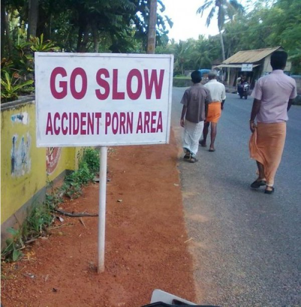

-

An Indian Gem
The Sygnificance of the Typeo
When you’re writing, you’re trying to convey meaning. It’s a very high level task. As with all high level tasks, your brain generalizes simple, component parts (like turning letters into words and words into sentences) so it can focus on more complex tasks (like combining sentences into complex ideas). We don’t catch every detail, we’re not like computers or NSA databases. Rather, we take in sensory information and combine it with what we expect, and we extract meaning. When we’re reading other peoples’ work, this helps us arrive at meaning faster by using less brain power. When we’re proof reading our own work, we know the meaning we want to convey. Because we expect that meaning to be there, it’s easier for us to miss when parts (or all) of it are absent. The reason we don’t see our own typos is because what we see on the screen is competing with the version that exists in our heads.